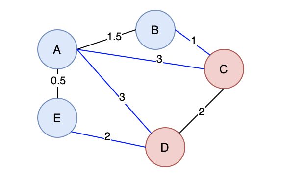

Что такое «разрез»? Хотя многие теоремы названы в честь людей, «разрез» не входит в их число. Чтобы понять «свойство разреза», нам необходимо понять две основные концепции.

Figure 11. Graph with a cut
Изучив основы разреза графа, давайте углубимся в «свойство вырезания». Свойство Cut обеспечивает теоретическую поддержку алгоритма Краскала и алгоритма Прима. Итак, что же такое «обрезанное свойство»? Согласно Википедии, «свойство вырезания» относится к:
Для любого разреза C графа, если вес ребра E в разрезе C строго меньше весов всех остальных ребер разреза C, то это ребро принадлежит всем MST графа. .
В следующем видео мы объясним и докажем «свойство вырезания».
Video: Proof of the Cut Property_1080p